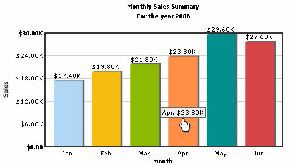
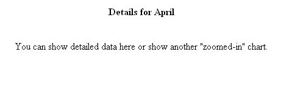

Creating Drill-Down Charts |
FusionCharts can be easily and extensively used to create drill-down charts. All the charts in FusionCharts suite support drill down for data elements i.e., in each chart type, the data plot of that chart (columns in Column Charts, Pie slices in Pie Charts etc.) can act as hotspots for the chart. Using the drill down functionality provided by FusionCharts, you can easily produce charts that enact "drill down" or "zoom in (data)" capabilities. In FusionCharts Free, you can define the following types of link for the data plot:
|
| Defining links for a Chart |
| To define a simple link for any data plot,
just define the link attribute for the
<set> element as under: With the above XML, the data plot (be it column, pie or line/area anchor), when clicked, will take to the page ShowDetails.asp?Month=Jan, which might contain another chart to show detailed results for the month of January. As you will note, the above link has been URL Encoded. FusionCharts expects all the links in URL Encoded format, if you have characters special characters (like ?,&, etc.) in your link. When the user clicks on the link, FusionCharts decodes it and invokes ShowDetails.asp?Month=Jan. All the server side scripting languages provide a generic function to URL Encode any string - like in ASP and ASP.NET, we've Server.URLEncode(strURL) , in PHP we've urlencode(dataURL)and so on. |
| XML Example: |
| <graph caption='Monthly Sales Summary'
subcaption='For the year 2006' xAxisName='Month' yAxisName='Sales' numberPrefix='$'> <set name='Jan' value='17400' link='DemoLinkPages/DemoLink1.html' color='AFD8F8' /> <set name='Feb' value='19800' link='DemoLinkPages/DemoLink2.html' color='F6BD0F' /> <set name='Mar' value='21800' link='DemoLinkPages/DemoLink3.html' color='8BBA00' /> <set name='Apr' value='23800' link='DemoLinkPages/DemoLink4.html' color='FF8E46' /> <set name='May' value='29600' link='DemoLinkPages/DemoLink5.html' color='008E8E' /> <set name='Jun' value='27600' link='DemoLinkPages/DemoLink6.html' color='D64646' /> </graph> |
| The XML will create a chart each of whose dataplots (here columns) links to a page of its won. The Link mouse cursor appears on hovering over each column. |
|  |
| On clicking the linked page opens up : |
|  |
| Opening links in new window |
| Quite often, you might want to open the drill-down
link in a new window instead of the same window. To have a link open in
a new window, all you need to do is, add n-
before any link. E.g.,
<set ... value='2235' ... link='n-ShowDetails.asp%3FMonth%3DJan' ...> The above link, when clicked, would open in a new window. Example XML: |
| <graph caption='Monthly Sales Summary'
subcaption='For the year 2006' xAxisName='Month' yAxisName='Sales' numberPrefix='$'> <set name='Jan' value='17400' link='n-DemoLinkPages/DemoLink1.html' color='AFD8F8' /> <set name='Feb' value='19800' link='n-DemoLinkPages/DemoLink2.html' color='F6BD0F' /> <set name='Mar' value='21800' link='n-DemoLinkPages/DemoLink3.html' color='8BBA00' /> <set name='Apr' value='23800' link='n-DemoLinkPages/DemoLink4.html' color='FF8E46' /> <set name='May' value='29600' link='n-DemoLinkPages/DemoLink5.html' color='008E8E' /> <set name='Jun' value='27600' link='n-DemoLinkPages/DemoLink6.html' color='D64646' /> </chart> |
|
For more detailed description of DrillDown please refer to "Creating Drill-down Charts" in "Using FusionCharts with ASP" or "Using FusionCharts with ASP.NET" or "Using FusionCharts with PHP". |